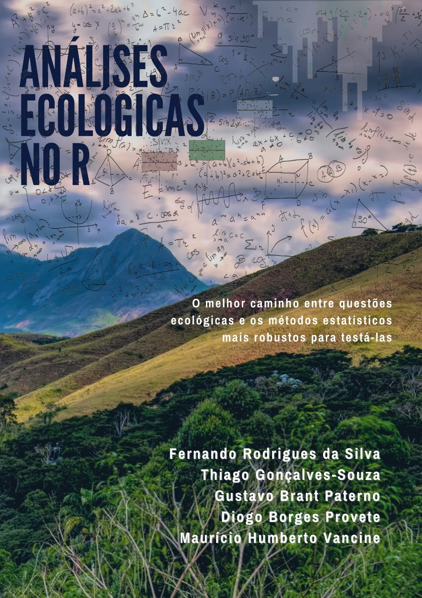

Skip to main content
Análises Ecológicas no R: Exercícios e Soluções
Show table of contents
Sumário
Bem-vindos
Cap. 4 - Introdução ao R
Cap. 5 - Tidyverse
Cap. 6 - Visualização de dados
Cap. 7 - Modelos lineares
Cap. 8 - Modelos Lineares Generalizados
Cap. 9 - Análises Multivariadas
Cap. 10 - Rarefação
Cap. 11 - Estimadores de riqueza
Cap. 12 - Diversidade Taxônomica
Cap. 13 - Diversidade Filogenética
Cap. 14 - Diversidade Funcional
Cap. 15 - Dados geoespaciais no R
Ver código fonte
Bem-vindos
Aqui você encontra os
exercícios e soluções
do livo
Análises Ecológicas no R
.

Cap. 4 - Introdução ao R
Nesta página
Bem-vindos
Ver fonte
Edite esta página